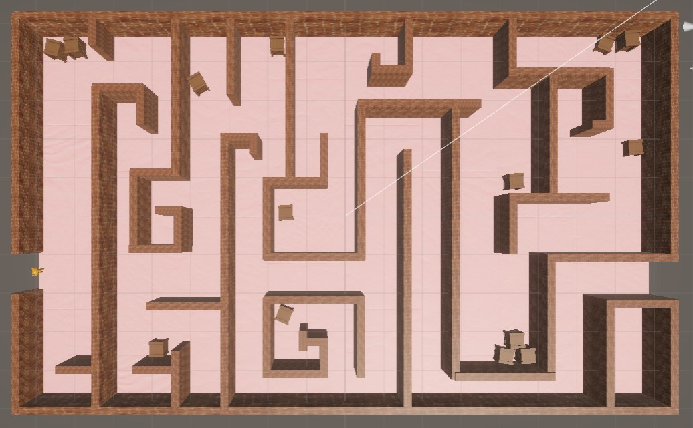

Öne Çıkan Projeler

LABYRINTH 3D

İkinci Projenizin Adı
Buraya ikinci projenizin kısa açıklamasını yazınız. Kullanılan teknolojiler, sanat yönü veya öne çıkan bir özellik olabilir.

Üçüncü Projenizin Adı
Buraya üçüncü projenizin kısa açıklamasını yazınız. Hangi alanda tecrübe kazandığınızı veya oyunun temasını belirtebilirsiniz.